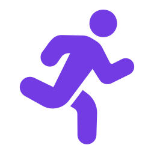
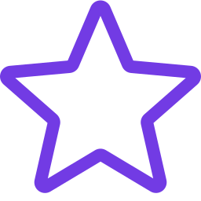

PROJECT OVERVIEW
기록을 넘어 감정을 공유하는
새로운 러닝 경험
Tracksy는 러닝 기록을 감성적인 카드로 편집하고
SNS에 쉽게 공유할 수 있도록 기획한 러닝 다이어리 앱입니다.
운동 기록과 감정을 함께 담아 나만의 러닝 경험을 제공합니다.
Background
- 기존 러닝 앱은 수치 중심의 기록에 집중되어
사용자의 감정과 개성을 표현하기 어렵습니다. - 2025년 러닝 인구 1,000만 시대,
기록을 시각적으로 편집하고 공유하려는
니즈가 더욱 증가하고 있습니다.
오늘 러닝도
예쁘게 기록하고 싶어!
예쁘게 기록하고 싶어!


Target
- 20-30대 러닝 입문자
- 러닝 기록을 SNS에 공유하는 사용자
- 감성적인 운동 기록을 선호하는 사용자
- 꾸준한 러닝 습관을 만들고 싶은 사용자
Needs
- 나만의 스타일로 러닝 기록을 남기고 싶어요
- 감성적인 러닝 카드를 만들고 싶어요
- SNS에 쉽게 공유하고 싶어요
- 꾸준히 러닝을 기록하고 싶어요

Core Features
AI
러닝일지
러닝일지
러닝
카드 디자인
카드 디자인
OCR
자동입력
자동입력
SNS
공유
공유